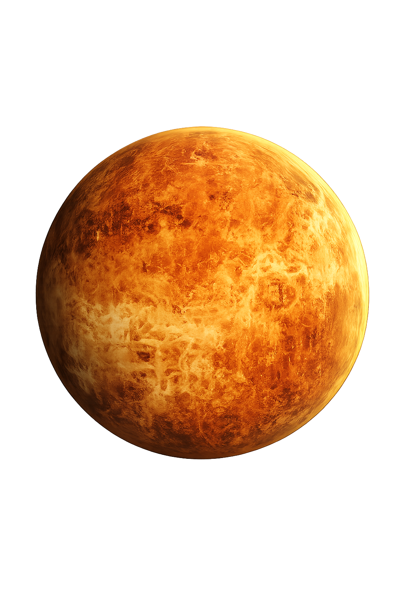

01
🔥 É o planeta mais quente do Sistema Solar — sua temperatura média chega a cerca de 464 °C, mesmo Mercúrio estando mais perto do Sol.
Segundo planeta a partir do Sol e o mais quente do Sistema Solar.
← Voltar ao Sistema Solar
Sua atmosfera é extremamente densa e rica em dióxido de carbono, provocando um intenso efeito estufa. Vênus possui tamanho e composição semelhantes aos da Terra, mas suas condições são extremamente hostis.
A Terra é nossa referência. Veja quanto tempo dura um dia em cada planeta do Sistema Solar.
Vênus precisa de aproximadamente 243 dias para completar uma única rotação.
Vênus é o segundo planeta a partir do Sol e possui tamanho e composição semelhantes aos da Terra. É o planeta mais quente do Sistema Solar devido à sua atmosfera extremamente densa e ao intenso efeito estufa. Sua rotação acontece no sentido contrário ao da maioria dos planetas e um dia em Vênus dura mais que um ano venusiano.
Com temperatura média de aproximadamente 464 °C, Vênus é o planeta mais quente do Sistema Solar.
Sua atmosfera é extremamente densa, composta principalmente por dióxido de carbono, causando um intenso efeito estufa.
Vênus gira no sentido contrário ao da maioria dos planetas e sua rotação leva cerca de 243 dias terrestres.
🔥 É o planeta mais quente do Sistema Solar — sua temperatura média chega a cerca de 464 °C, mesmo Mercúrio estando mais perto do Sol.
🔄 Gira ao contrário — Vênus possui rotação retrógrada, então o Sol nasceria no oeste e se poria no leste.
⏳ Um dia é maior que um ano — Vênus leva aproximadamente 243 dias terrestres para completar uma rotação, enquanto seu ano dura apenas 224,7 dias.